Rangos de apoyo (VIP)#
Los rangos de apoyo ayudan a mantener el servidor. Cada uno trae su propio equipo, una mascota y ventajas para tu cuenta; el más sencillo, el Amanecer, es solo de aspecto.
Lo que da cualquier rango#
- Viajes a mitad de precio (el cuervo, o la biwa si eres demonio).
- +25 % en todo lo que paga el servidor: misiones, encargos del día, recompensa nocturna, Luna de Sangre y, al demonio, su paga de la noche, la paga de Muzan y el Tablón de la Noche.
- Todas las formas de tus respiraciones, también las de la 7.ª en adelante.
- Un kit semanal con la ropa y la katana (o el arma) del rango:
/kit <id>. - Una mascota propia del rango que te acompaña:
/vip mascota. - Su título (se queda aunque el rango caduque), prefijo en el chat, nombre dorado con ✦ en la lista de jugadores, la línea «VIP · RANGO» sobre tu cabeza y un anuncio cuando entras al servidor.
- Si es un rango del Cuerpo (de cazador), la Marca del Cazador (H) con cualquier rango, con el poder de su pilar (ver).
El Amanecer es la excepción: solo trae lo de aspecto (título, equipo, mascota y la línea sobre tu cabeza), sin viajes a mitad de precio, sin el +25 %, sin las formas y sin la Marca. Ver abajo.
Los rangos#
| Rango | Para | Kit | Mascota | Lo especial | |
|---|---|---|---|---|---|
| 【暁】 | Amanecer | Cazador | /kit amanecer (al mes) |
Dragón del alba | Solo aspecto, sin ventajas. Su katana toma tu respiración. |
| 【水】 | Pilar del Agua | Cazador | /kit agua |
Koi del agua | Con sus tabi andas sobre el agua. |
| 【雷】 | Pilar Superior del Trueno | Cazador | /kit trueno |
Gorrión del trueno | Golpeas más rápido y saltas más. |
| 【霞】 | Pilar de la Niebla | Cazador | /kit niebla |
Lechuza de la niebla | Agachado te vuelves invisible. |
| 【炎】 | Pilar de la Llama | Cazador | /kit fuego |
Fénix de la llama | Inmune al fuego; lo que cortas arde. |
| 【音】 | Pilar del Sonido | Cazador | /kit sonido |
Ave lira del sonido | Dos katanas, una en cada mano; ves brillar a los enemigos cercanos. |
| 【獣】 | La Bestia | Cazador | /kit bestia |
Jabato de la bestia | Dos colmillos, uno en cada mano; rematas a los enemigos heridos. |
| 【灰】 | Ceniza Oscura | Cazador | /kit cenizaoscura |
Zorro de ceniza | Su propia respiración: la Ceniza, cinco formas. |
| 【紅】 | Oscuridad Carmesí | Cazador | /kit oscuridadcarmesi |
Mariposa del abismo | Su propia respiración: la Oscuridad Carmesí, cinco formas. |
| 【魂】 | Señor de las Ánimas | Demonio | /kit animas |
Farol maldito | Su propio linaje: cinco artes de sangre que se suman a las tuyas. |
| 【夢】 | Enmu | Demonio | /kit enmu |
Tren Infinito | Una Luna: su mano duerme a los cazadores del Cuerpo que te golpean. |
| 【破】 | Akaza | Demonio | /kit akaza |
Brújula de Koyuki | Una Luna: pelea con los puños; cada tercer puñetazo abre la brújula. |
| 【氷】 | Douma | Demonio | /kit douma |
Niño de Cristal | Una Luna: dos abanicos de hielo, uno en cada mano. |
| 【月】 | Kokushibo | Demonio | /kit kokushibo |
Luna de los Seis Ojos | Una Luna: su espada, Kyokoku Kamusari, y seis ojos que ven lo que acecha. |
Ceniza Oscura, Oscuridad Carmesí y Señor de las Ánimas traen técnicas que no existen en ningún otro sitio del juego:

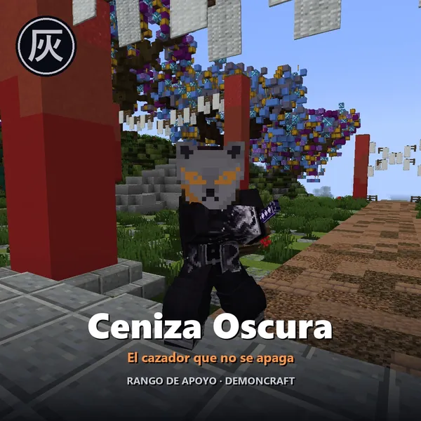

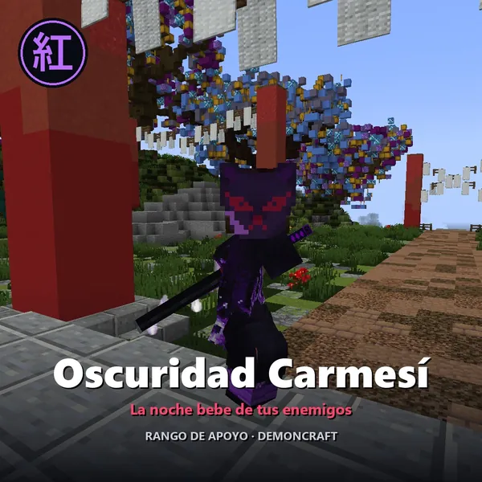

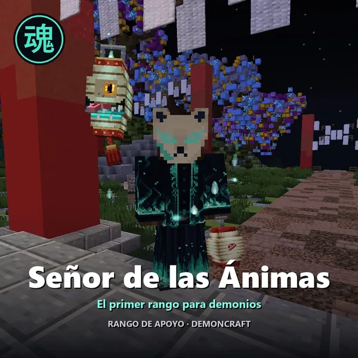

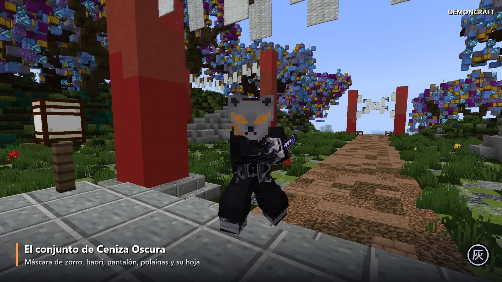

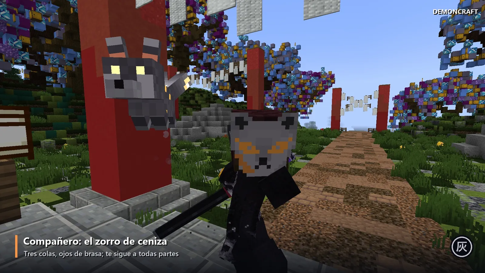

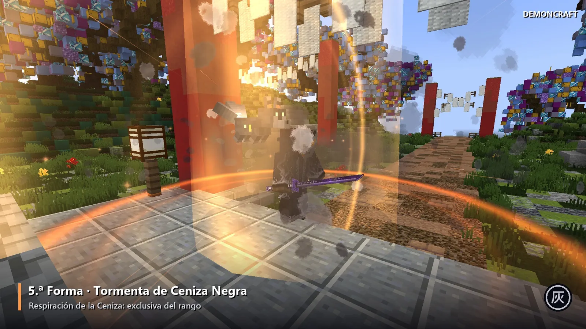

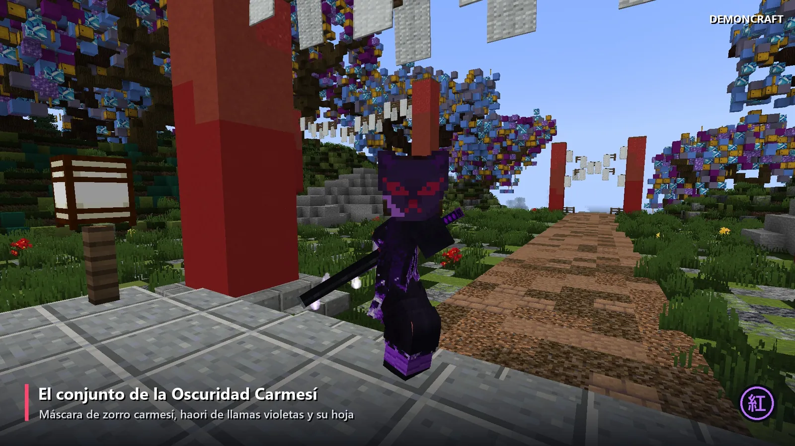

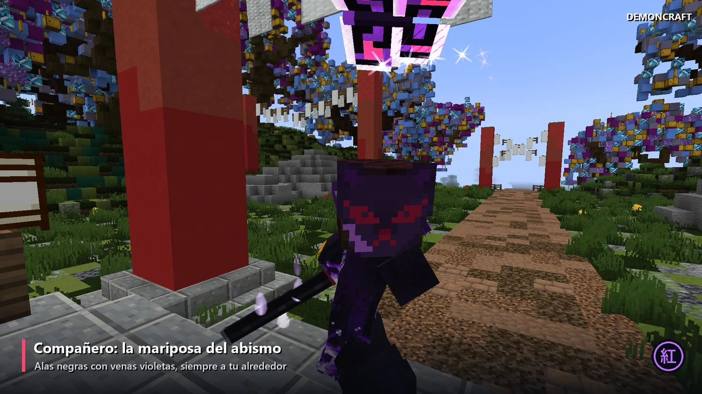

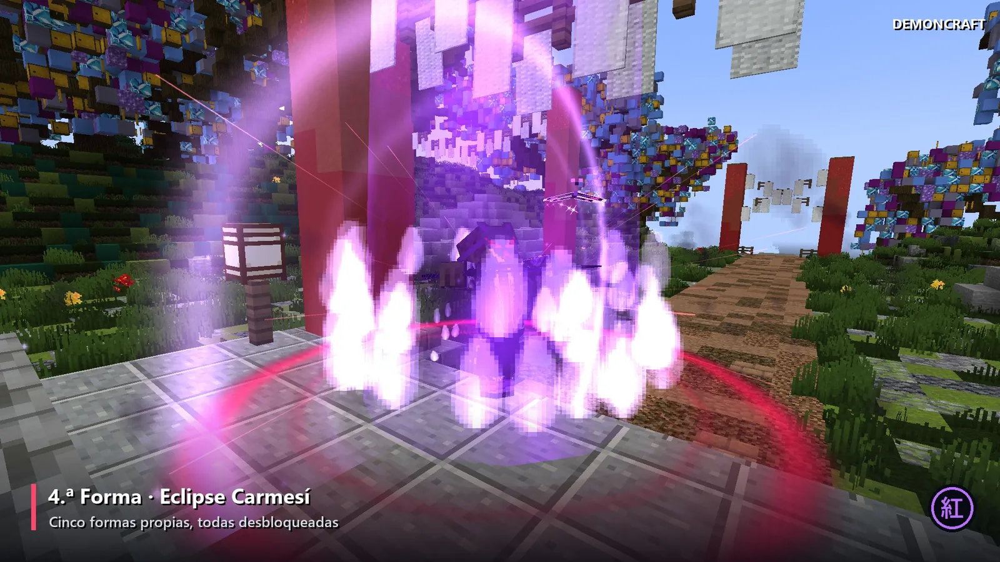

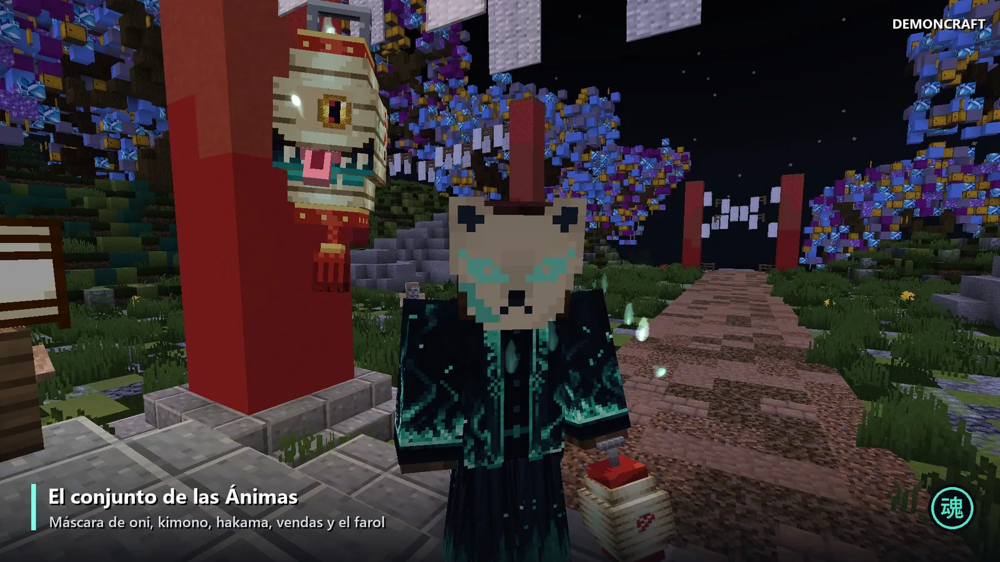

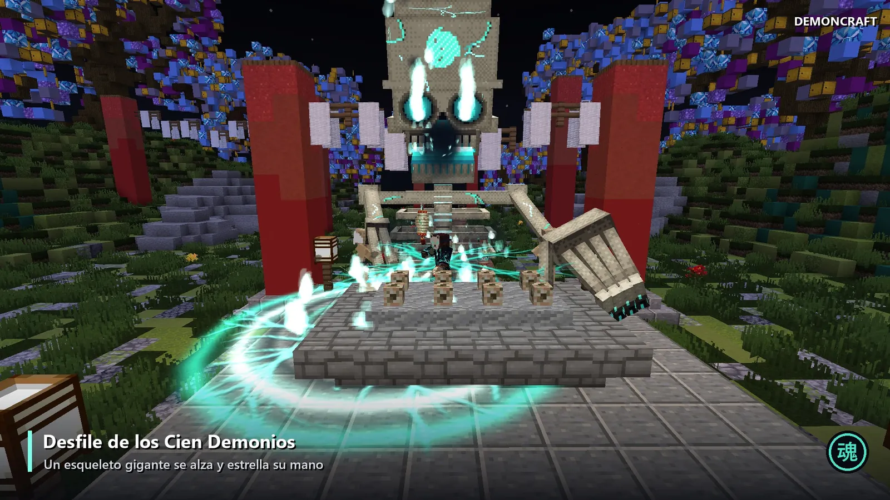

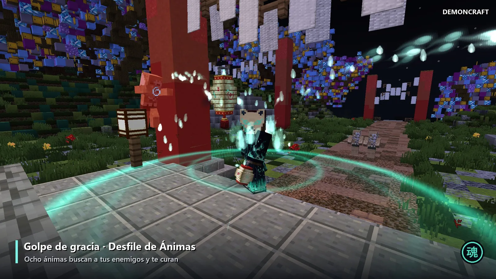
- La 5.ª forma de la Ceniza y la de la Oscuridad Carmesí atrapan y arrastran a quien está cerca y le dan siempre: no se paran con el bloqueo ni con la parada, no se esquivan rodando y la defensa del demonio no las frena.
- Con el farol de las Ánimas en la mano, su arte del clic derecho no alcanza a ningún jugador a más de 6 bloques. Sin el farol, con Z, X y C, y contra los demonios de la noche y los jefes, igual que siempre.
Las mascotas de los pilares#
Cada rango de pilar trae su propia mascota, con su modelo, sus gestos, sus chispas y su voz. Se llama con /vip mascota.
| Rango | Mascota | Cómo es |
|---|---|---|
| Pilar del Agua | Koi del agua (koi) |
Nada en un ocho alrededor de tu pecho, ondulando, y de vez en cuando salta. Deja caer gotas. |
| Pilar Superior del Trueno | Gorrión del trueno (gorrion) |
Posado en tu hombro izquierdo, echando chispas; a veces da una vuelta volando sobre tu cabeza. |
| Pilar de la Niebla | Lechuza de la niebla (lechuza) |
Planea junto a tu cabeza entre bruma blanca, gira la cabeza y ulula. |
| Pilar de la Llama | Fénix de la llama (fenix) |
Da vueltas sobre tu cabeza con alas de fuego y tres colas, soltando brasas. |
| Pilar del Sonido | Ave lira del sonido (avelira) |
Junto a tu hombro derecho, con su cola de plata. De vez en cuando canta: alza la cola en lira e imita sonidos. |
| La Bestia | Jabato de la bestia (jabato) |
Trota junto a tu rodilla y, de vez en cuando, embiste hacia delante con los ojos encendidos. |
- Son compañía: no pelean ni se pueden tocar.
- En primera persona no ves la tuya si va pegada a la cámara (el gorrión del hombro), para que no te tape la vista; los demás sí la ven.
- El cuervo Kasugai ya no acude: si lo tenías elegido, ahora te acompaña la de tu pilar.
Las gemelas del Sonido y de La Bestia#
Los kits del Pilar del Sonido (dos «Nichirin Gemela») y de La Bestia (dos «Colmillo de la Bestia») traen dos hojas que se llevan una en cada mano:
- Coge la segunda hoja en la mano y pulsa O (o arrástrala al hueco del escudo del inventario): pasa a la otra mano.
- Coge la otra en la mano principal. Ahora peleas con las dos a la vez, con su estilo de dos espadas, y te cubres con las dos.
Si la O no hace nada
Mira en Opciones → Controles → Teclas que la tecla de pasar el objeto a la otra mano siga en la O y que tengas el pack del juego al día.
- Van dobles con cualquier respiración: las formas son las de tu respiración activa y, si la cambias, siguen dobles.
- Con las dos puestas despierta lo suyo: con las del Sonido, cada corte suelta una onda que alcanza hasta a dos enemigos más; con los colmillos de La Bestia, golpeas más rápido y rematas lo que ya está muy herido. Nunca a otro jugador.
La marca de cada pilar#
Con un rango VIP del Cuerpo (los cinco Pilares, La Bestia, Ceniza Oscura u Oscuridad Carmesí), la Marca del Cazador (H) es tuya al momento y con cualquier rango del Cuerpo (sin uno de estos rangos, despierta en Hashira). Al recibir el rango te lo dice el chat: «Y tu Marca del Agua, ya despierta: tecla H, 20 s de…».
Es la Marca de siempre (20 s de Regeneración II y 2 minutos de descanso) y, además, la de tu pilar, con un aura de su color:
| Rango | Su marca | Lo que te da durante sus 20 s |
|---|---|---|
| 【水】 Pilar del Agua | Marca del Agua | Resistencia, gracia del delfín y respirar bajo el agua. |
| 【雷】 Pilar Superior del Trueno | Marca del Trueno | Velocidad II, prisa II y salto. |
| 【霞】 Pilar de la Niebla | Marca de la Niebla | 5 s invisible, velocidad y caída lenta; esquivas uno de cada cinco golpes de los demonios. |
| 【炎】 Pilar de la Llama | Marca de la Llama | Fuerza y resistencia al fuego; tus golpes prenden a los demonios. |
| 【音】 Pilar del Sonido | Marca del Sonido | Prisa II y velocidad; los demonios a 32 bloques brillan y los ves a través de las paredes. |
| 【獣】 La Bestia | Marca de la Bestia | Velocidad II y salto II; cada golpe a un demonio te cura (un 15 % de lo que le quitas). |
| 【灰】 Ceniza Oscura | Marca de la Ceniza | Fuerza y velocidad; brasas negras en los demonios que golpeas: arden y se frenan. |
| 【紅】 Oscuridad Carmesí | Marca Carmesí | Resistencia y velocidad; robas vida a los demonios (un 20 % de lo que les quitas). |
- Mientras dura, tus formas y tus técnicas del Cuerpo esperan un 20 % menos.
- Lo que tu pilar hace a los demonios (esquivar, prenderlos, hacerlos brillar, curarte con sus golpes, las brasas) es solo contra los demonios del mundo, nunca contra un jugador.
- En los duelos del dojo, nada: tampoco la Marca de siempre («En el tatami la Marca duerme: los dos pelean igualados»).
- Con varios rangos del Cuerpo, la marca es la del conjunto que llevas puesto.
/vip infote dice cuál es la tuya. - Un demonio no tiene Marca. Si el rango caduca, la Marca vuelve a esperar al rango Hashira.
Las Lunas: rangos de demonio#
Cuatro rangos para demonios, como el Señor de las Ánimas: Enmu, Akaza, Douma y Kokushibo. Su ropa, su arma y su conjunto solo funcionan siendo demonio y con el rango. Si eres cazador, tienes las ventajas de cuenta de cualquier rango y su mascota; lo demás te espera para cuando te conviertas. No dan linaje: el de la Luna, el del Hielo y el del Puño se ganan en el camino del demonio (ver), y la sangre de Enmu (el Linaje del Sueño), con su propia cadena, en el Árbol de la Sangre (ver).
Lo de las cuatro (siendo demonio, con el rango y sus piezas puestas; en el tatami del dojo no cuenta):
- Cada pieza de ropa suma armadura y dureza encima de tu carne de demonio (+6 de armadura y +4 de dureza con las cuatro) y te quita un 3 % de lo que te hacen las formas de los cazadores, jugadores o del Cuerpo.
- Pecho: las artes de su linaje (Kokushibo, la Luna; Douma, el Hielo; Akaza, el Puño) se recargan un 10 % antes; con el de Enmu, todas tus artes. Piernas: más velocidad. Pies: saltas más y sin daño de caída.
- Con el conjunto entero (las cuatro piezas y su arma o lo de su mano izquierda): +2 corazones, un 2 % más contra las formas (un 14 % en total), su despertar al completarlo, su aura, que ve todo el mundo, y su golpe de gracia: cuando bajas del 30 % de vida recuperas 4 corazones y castiga a lo que te rodea (una vez cada 3 minutos). Lo de la mano de Enmu y de Akaza también pide el conjunto entero.
- Sus armas (los abanicos de Douma y la espada de Kokushibo) pegan como una buena nichirin (8) y +2 con el rango, y con ellas te cubres y paras. Solo obedecen a un demonio con su rango: regaladas, ni pegan ni cubren. Con un arma en la mano no hay garras.
- Lo de la mano izquierda (la horquilla de Akaza, la mano de Enmu, el segundo abanico de Douma) se pone con la O, como las gemelas. La tiara de Douma, con clic derecho.
- Contra otro jugador cuentan la armadura, la resistencia a sus formas y el daño de las armas; el sueño, la escarcha, la brújula, las lunas y el castigo del golpe de gracia son solo contra los cazadores del Cuerpo y las criaturas.
- Si el rango caduca, la ropa y el arma se quedan contigo, sin efectos: el arma deja de responderte.
| Luna | En la mano | Lo suyo | Golpe de gracia | Mascota |
|---|---|---|---|---|
| 【夢】 Enmu | Mano del Sueño (izquierda): el cazador del Cuerpo que te golpea se duerme 2 s | Nada te adormece: ni la ceguera, ni la oscuridad, ni el mareo | Sueño Profundo: todo a 8 bloques se duerme 4 s | Tren Infinito (tren) |
| 【破】 Akaza | Horquilla de Koyuki (izquierda) y tus puños: cada tercer puñetazo seguido al mismo enemigo abre la brújula (+2, y alcanza a otros dos) | Fuera de combate te recuperas medio corazón por segundo, y su pantalón hace que te empujen menos | Copo de Koyuki: hiere, aparta y debilita, y tú sales más rápido | Brújula de Koyuki (brujula) |
| 【氷】 Douma | Dos Abanicos de Hielo, uno en cada mano: hielan a los cazadores del Cuerpo y, con los dos, su soplo alcanza a otros dos | Nada te frena: ni la lentitud ni el hielo | Loto de Escarcha: hiere, frena y congela 4 s | Niño de Cristal (nino) |
| 【月】 Kokushibo | Kyokoku Kamusari, su espada: cada tajo a un cazador del Cuerpo alcanza también a otros dos | Los monstruos y cazadores del Cuerpo a 16 bloques brillan, aunque se escondan | Luna Creciente: una corona de lunas corta todo a 7 bloques y lo frena | Luna de los Seis Ojos (luna) |
Su kit, una vez por semana: /kit enmu, /kit akaza, /kit douma o /kit kokushibo. Su título es el de su Luna: «Luna
Inferior Uno» (Enmu), «Luna Superior Tres» (Akaza), «Luna Superior Dos» (Douma) y «Luna Superior Uno» (Kokushibo); si eres
cazador, otro a juego.
- Los Niños de Cristal obedecen. El Niño de Cristal de Douma, su mascota, es solo compañía. Los que pelean por ti son los Niños de Cristal del arte del linaje del Hielo, y ahora solo atacan lo que golpeas tú o lo que os hace daño, a ti o a ellos, en los últimos 10 segundos; nunca a quien tú no puedes atacar, y en un duelo, solo a tu rival. Ya no se van solos a por el muñeco del dojo ni a por lo primero que ven.
- La máscara de Kokushibo tapa la cara. Con el Rostro de los Seis Ojos puesto, el pelo, los cuernos o la cara pintada de tu skin ya no salen por encima: se ven los seis ojos y su melena.

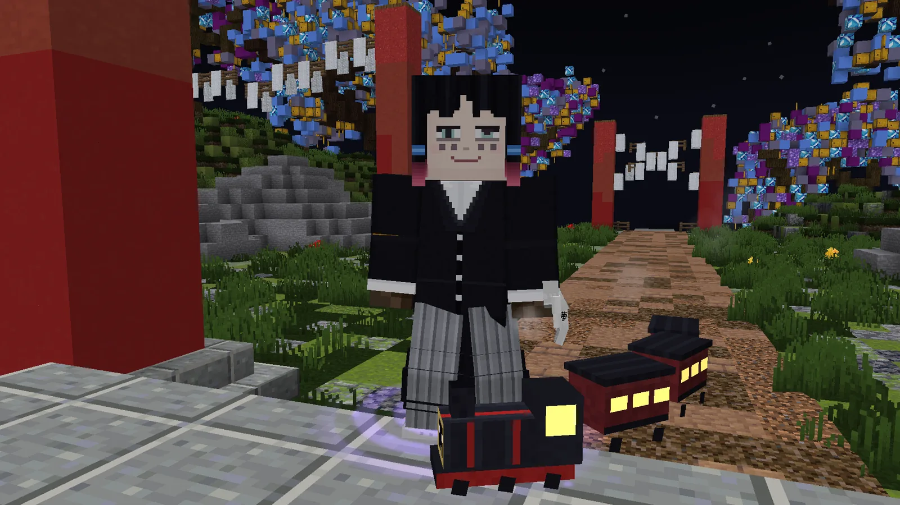

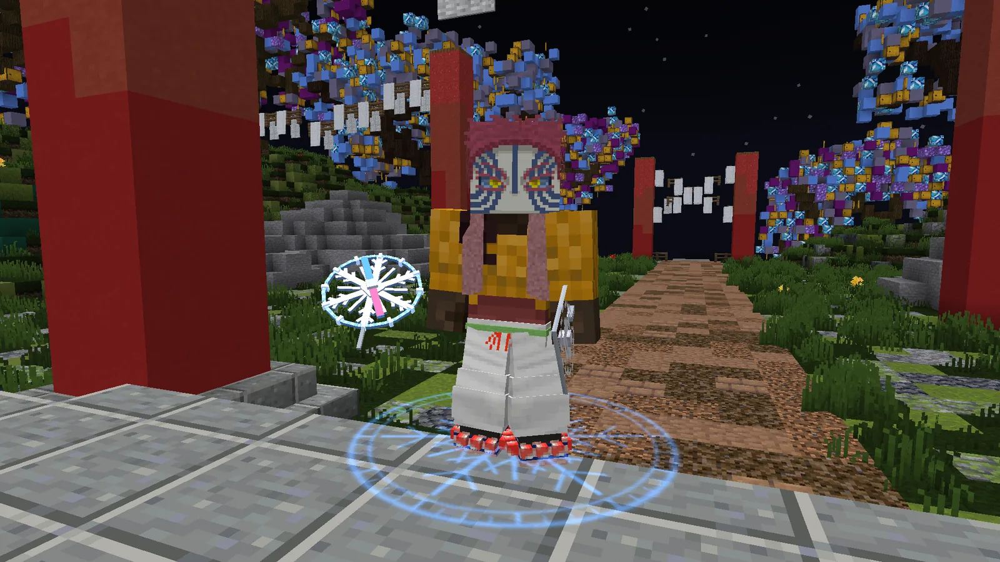

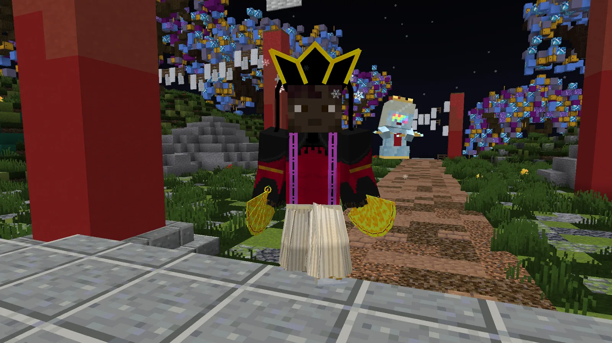

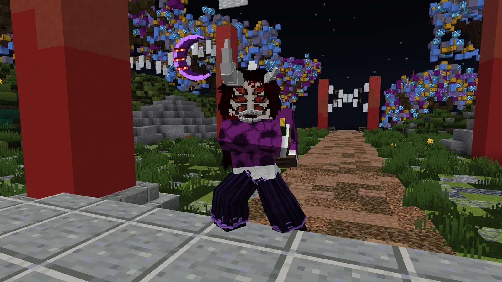

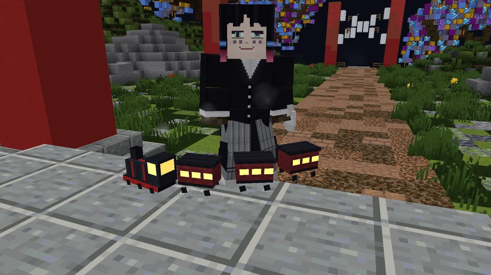

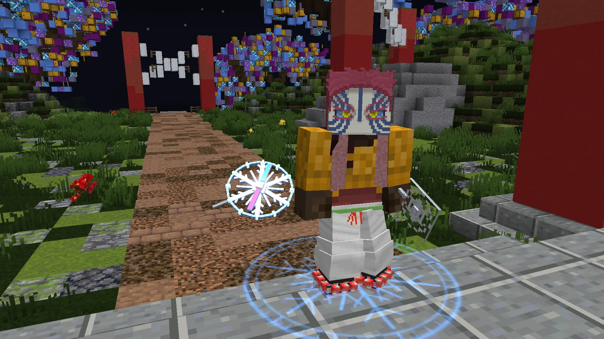

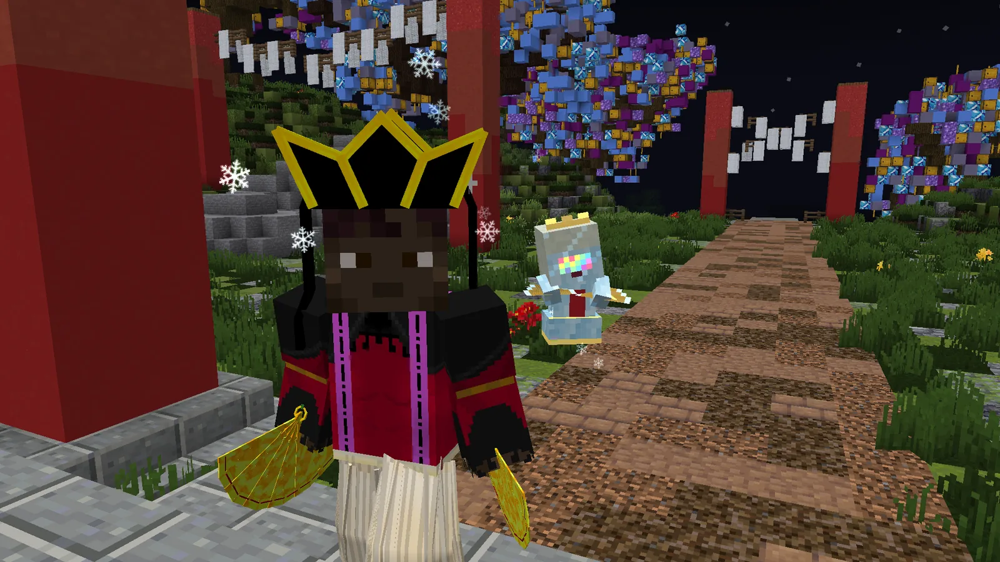

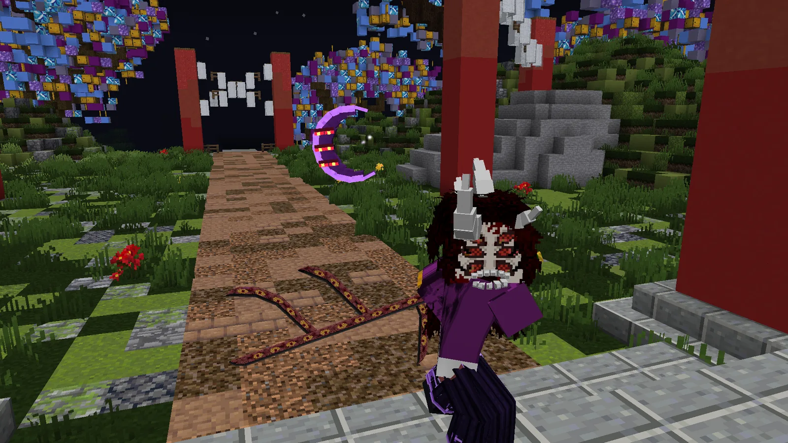
Amanecer: el rango de aspecto#

El rango más sencillo y solo de aspecto: no da ninguna ventaja, ni en combate ni en tu cuenta (ni viajes a mitad de precio, ni el +25 %, ni las formas, ni la Marca). Lo suyo es verse:
- Sobre tu nombre, «VIP · AMANECER» con los colores del alba y un destello que lo recorre; el prefijo 【暁】 en el chat y su título, «Amanecer» (o «Ocaso» si eres demonio).
- Su equipo, con
/kit amaneceruna vez al mes: el haori del Primer Amanecer (de la noche de los hombros al oro del bajo, con el sol naciente a la espalda), su hakama, sus polainas y la Hoja del Primer Amanecer, una katana cuyo lomo es la noche y cuyo filo es el alba. - La katana no tiene respiración propia: en cuanto la empuñas toma la tuya (K → Respiración), con todas sus formas, y se sigue viendo igual. Se gasta como cualquier hoja: la repara Hotaru Haganezuka en la Aldea de los Herreros.
- Con el conjunto entero y la katana en la mano, despierta el alba: un sol nace a tu espalda y se abre un aro de luz a tus pies. Al golpear, la hoja suelta destellos de luz, y lo que matas se deshace en luz.
- Su mascota, el dragón del alba (
/vip mascota): un dragón pequeño que nada a tu espalda persiguiendo su perla, del oro de la cabeza al violeta de la cola. Se pone en guardia si hay monstruos cerca, canta de vez en cuando y saluda al sol cada mañana. No pelea: es solo compañía.

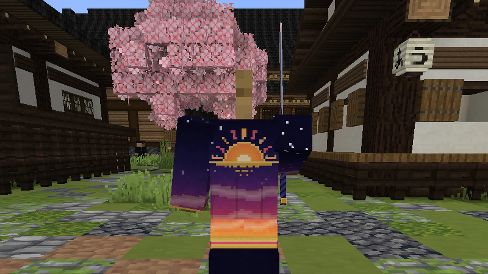

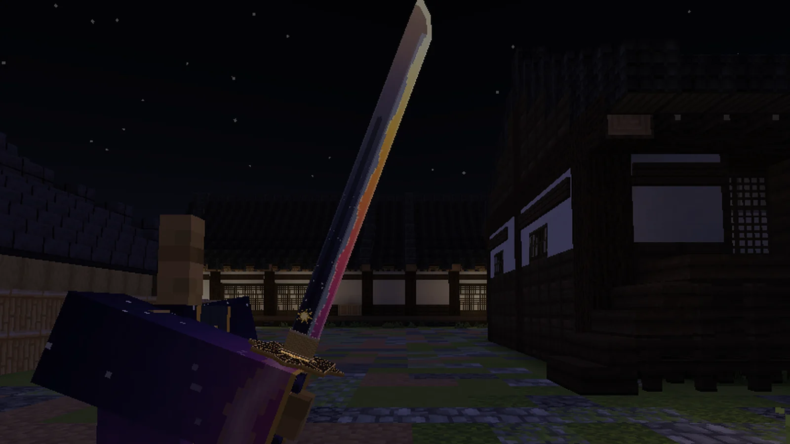

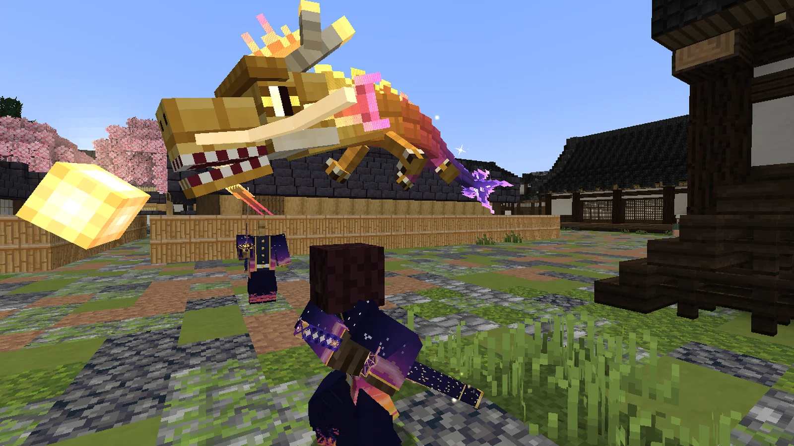

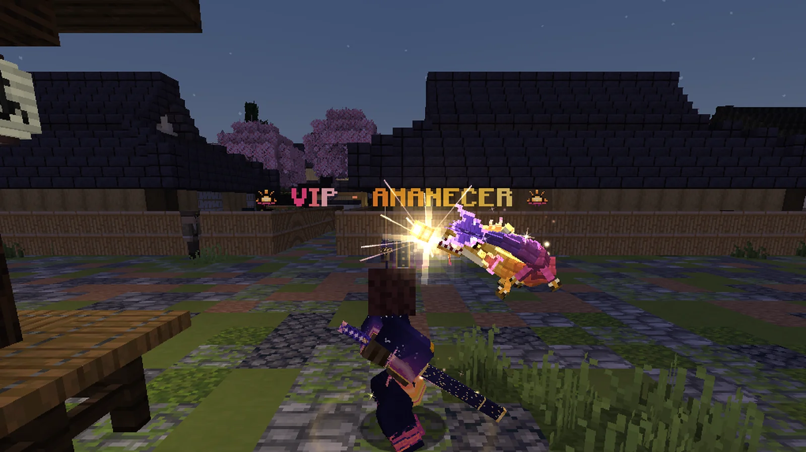
El equipo del rango#
Los efectos del equipo funcionan cuando tienes el rango y llevas sus piezas puestas (siendo del bando del rango). En el tatami del dojo no cuentan.
- Pecho: regeneración cuando llevas 10 segundos sin recibir golpes. Botas: sin daño de caída. Katana: +2 de daño.
- Con el conjunto completo (las cuatro piezas y la katana en la mano): +2 corazones, regeneración más fuerte, una estela al esprintar y un golpe de gracia automático cuando bajas del 30 % de vida (una vez cada 3 minutos).
- Cada rango tiene además sus efectos propios en la cabeza, las piernas y los pies (los de la tabla de arriba).
- Regalar la ropa no regala el rango: sin el rango, la ropa es solo aspecto. La katana del kit solo funciona con su rango.
- Si el rango caduca: la ropa se queda contigo sin efectos, la katana del kit se va y el título se queda.
- El Amanecer no tiene ninguno de estos efectos: su equipo es solo aspecto.
- Los rangos de demonio (Señor de las Ánimas y las Lunas) no llevan la regeneración del pecho ni la katana: tienen lo suyo, más arriba.
Si tienes varios rangos#
Tú eliges qué rango enseñas y qué mascota te acompaña:
/vip titulo: tus títulos VIP para pulsar. El que elijas sale en todo: la línea sobre tu cabeza, el prefijo del chat, tu nombre en los mensajes del servidor, tu anuncio al entrar y tu título. También lo eliges poniéndote su título en K → Títulos./vip mascota <cuál>:koi,gorrion,lechuza,fenix,avelira,jabato,zorro,mariposa,farol,dragon,tren,brujula,ninooluna. Al llamar a tu mascota con/vip mascotaverás las demás para cambiar pulsando. Seas cazador o demonio, te acompaña cualquiera de las de tus rangos.- Con
ropa(/vip titulo ropa,/vip mascota ropa) vuelves a lo de siempre: lo del conjunto que llevas puesto.
Elegir no cambia tus ventajas: los efectos siguen siendo los del conjunto que llevas puesto. Un rango nuevo se pone a la vista con su mascota en cuanto te llega.
Comandos#
| Comando | Qué hace |
|---|---|
/vip info |
Tu rango, tus ventajas (también tu marca, si es un rango del Cuerpo) y cuándo te toca el próximo kit. |
/vip mascota |
Llama o despide a tu mascota. |
/vip mascota <cuál> |
Con varios rangos, elige qué mascota te acompaña (ropa: la de tu conjunto). |
/vip titulo |
Con varios rangos, elige qué rango enseñas (/vip titulo <rango>, o ropa). |
/kit |
Lista tus kits y cuándo puedes recogerlos. |
/kit <id> |
Recoge el kit de tu rango (una vez cada 7 días; el del Amanecer, una vez al mes; necesitas hueco en el inventario). |
Cómo conseguirlo#
- En la tienda de DemonCraft: fartherlands-webstore.tebex.io.
Dentro del juego,
/buyabre el menú de la tienda. - Compra con tu nombre de jugador exacto y estando conectado: el rango llega en unos minutos, con una ceremonia y un anuncio a todo el servidor.
Otros extras de la tienda#

- Metal nichirin premium: cada lingote es una tirada de la Caja Premium (K → Caja), que da una de las cinco hojas legendarias (ver).
- Pase Premium: la fila dorada del Pase Estelar de la temporada: una recompensa más en cada nivel y un 20 % más de experiencia.
- Sangre Premium: cada vial es una tirada de la Caja de Sangre del demonio (K → Caja o
/caja), con cinco armas legendarias que no son espadas (ver). Solo la abre un demonio. - Sello de Sangre: para quien cambia de bando muchas veces (ver la cura).
- Hojas y prendas de aspecto, sin efectos.